From the shadow of the garage to the light of the stage. A raw story. Pure energy.
BACKSTAGE
From the garage to the stage, a story of decibels: photos, videos, audio and documents.
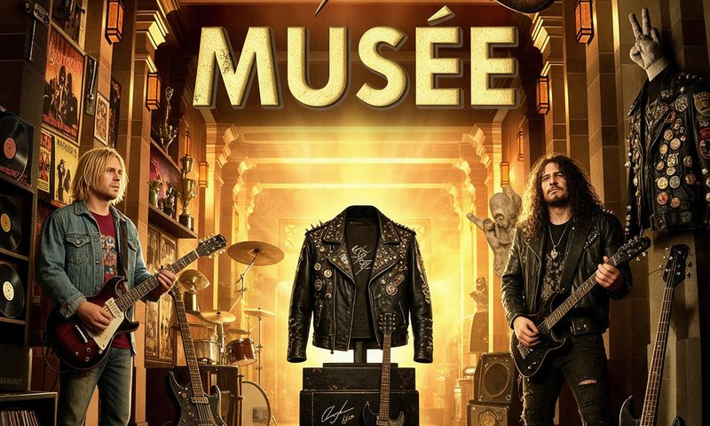
The Museum
The objects that left a mark on us, the ones that lifted some gigs or rehearsals, and helped make those moments unforgettable.
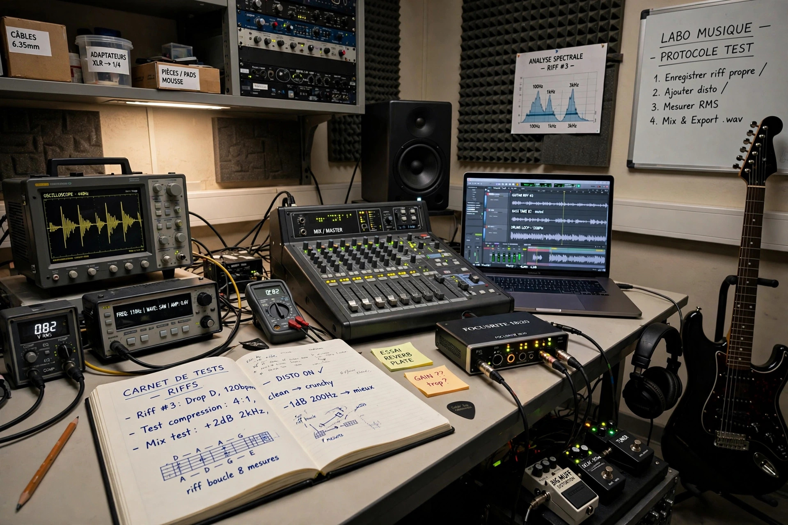
The Lab
Riffs, demos, remixes: what is being made right now, to listen to as it comes.
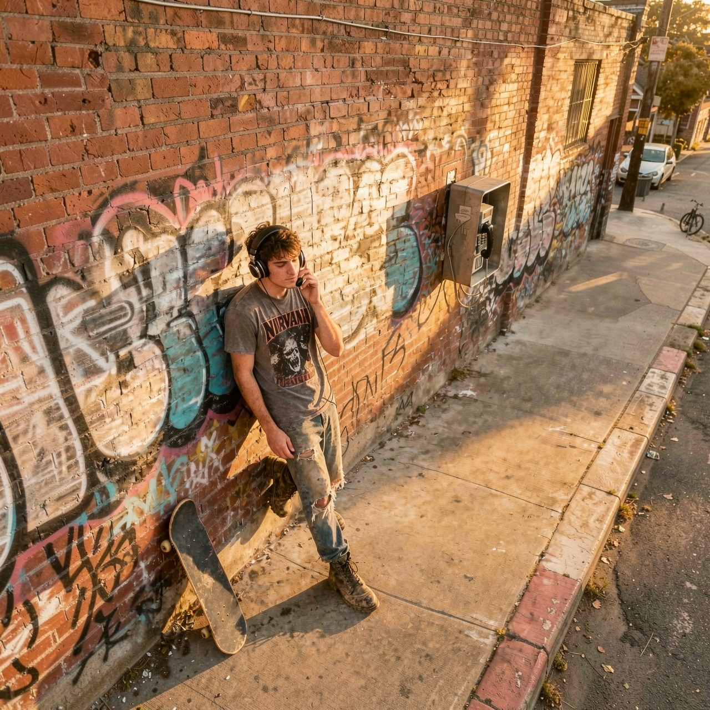
Listening sessions
Riffs, tracks, a few notes on CDs, come and listen ...
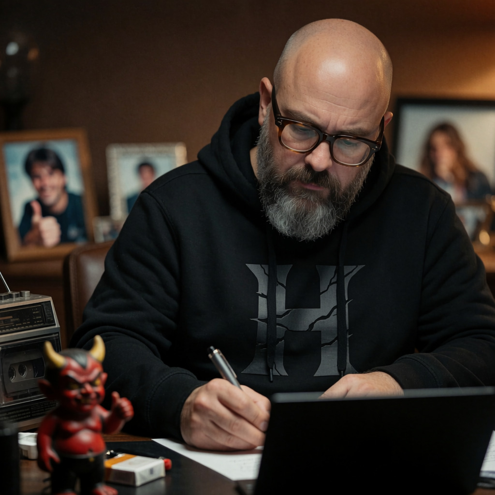
ANECDOTES
The members look back on their early days, 20 years later.
LINE-UPS
The sound craftsmen of Saint Erblon.
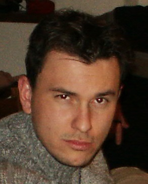
Regis.
DrumsFounder. The one-string guitar at the start, then a small electronic drum machine in 1990, and the real drum kit from 1991 — until 2012.
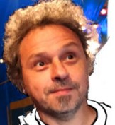
Tanguy.
Percussion (Desastrax)Founder. The wooden cassette box he hit at the start, and the artwork designer. He left the band and later started Totem Stille, in Paris.
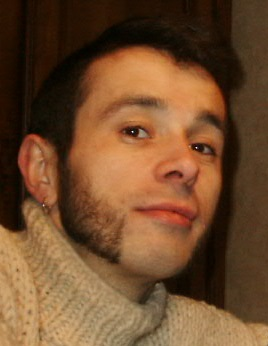
Loran.
Vocals, then guitarFounder. The singer at the start, until 1988, then guitarist and photographer for the band.
Tony.
Synth, then vocalsFounder. On synths in Desastrax, singer from Explicit to Jar. Left the band in early 2002.
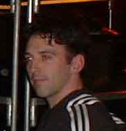
Gilles.
Bass, then guitarJoined in 1991: bass until 1998, guitar until December 2003.
Jérome.
GuitarSecond guitar in Explicit, No Mug and Helium, from 1993 to 1998.
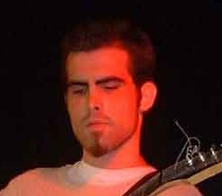
Florent.
GuitarGuitarist from 1998, moved to seven strings in 2003, until the end of Wöw in 2012.

JeanMarie.
Bass — “Jean-Jean”Bass in Jar, then Codéine and Wöw, from 1998.
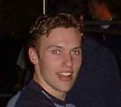
Jean-François.
Vocals — “Jef”The “new kid” who came in on vocals in 2002, nicknamed Jef by the other musicians. He left in 2004, replaced by Alex.
DISCOGRAPHY
Listen to how the band changed.
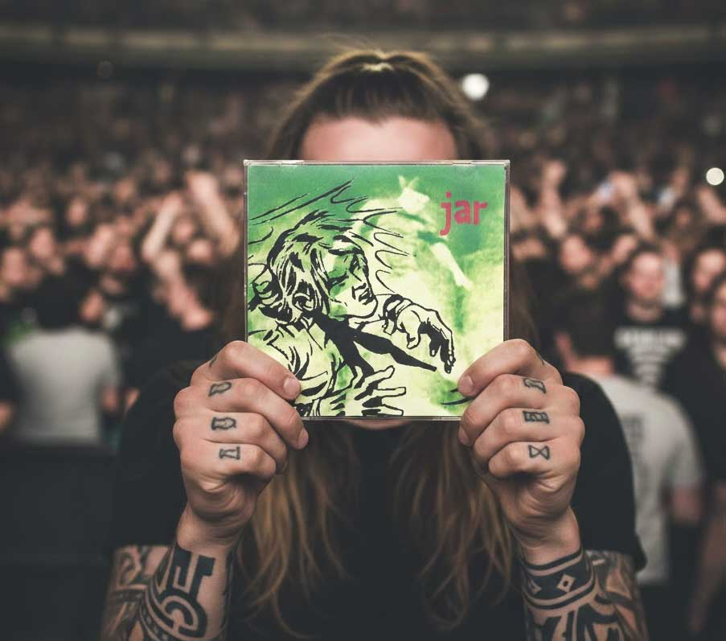
Jar (1998)
Jar • FrontRecorded at Studio "Panoramix", "chez nono" in Saint-Sauveur-de-Flée.
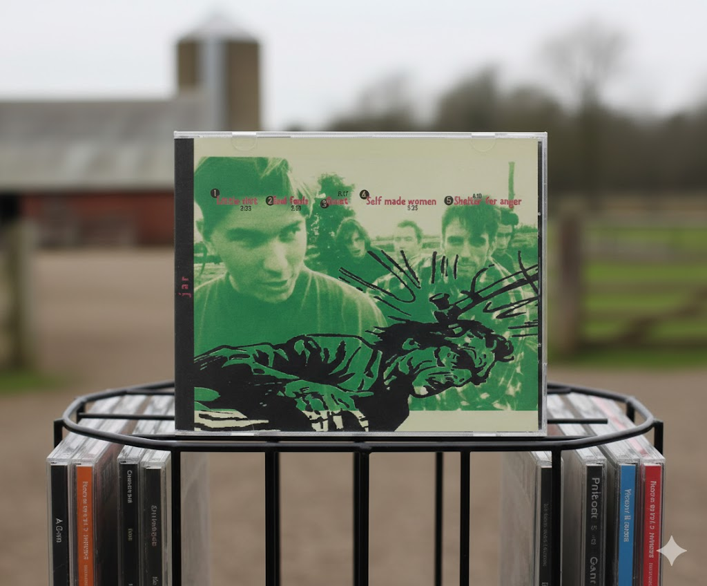
Jar (1998)
Jar • BackGraphic design: Tanguy Ferrand, photo: Loran Ferrand.
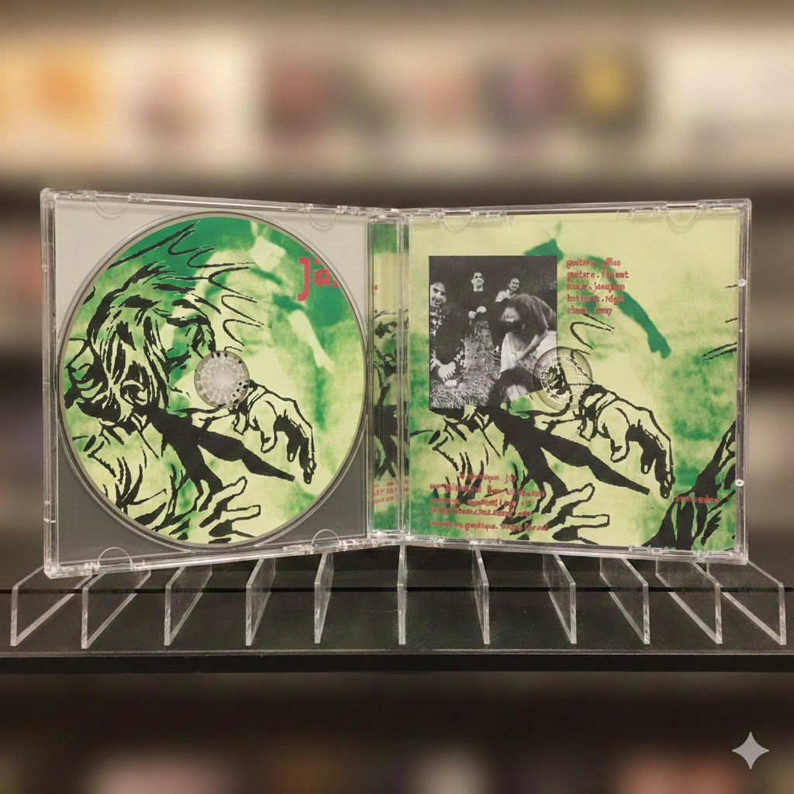
Jar (1998)
Jar • inside the CD caseRehearsals at les Courans, 53200 Longuefuye.
TIMELINE
The key dates in the band's story.
The cassette: DESASTRAX
Régis, Tanguy, Tony and Loran, based in Saint-Erblon between Rennes and Angers, under French alternative influence. The four of them went for songs with words, recorded a four-track cassette on a tape recorder of the time — then split up in 1988.
The comeback: EXPLICIT
Tony, Régis and Loran kept playing as best they could. Gilles joined and went straight to the bass; Régis moved to drums, Loran to guitar, Tony to vocals. Explicit was born, with a stop at Soul Famous Carpet along the way.
First gig: NO MUG
Jérôme joined the four. First gig in Château-Gontier (53) on 2 September 1993, and a good one. Looking back, Explicit became No Mug. Loran left for Paris.
Hardcore fusion: HELIUM
The band took the line of American hardcore fusion, with Dischord influences (Fugazi, Quicksand) and grunge.
The CD: JAR
Jérôme left, Jean-Marie and Florent came in. The band reached its peak and recorded a five-track CD in a studio. At the end of 1999 it broke up and stopped everything for two years.
The comeback without Tony: CODEINE
The band did it again without Tony, with new influences (Incubus, Sevendust) and a new singer, Jean-François. Creation of the Tous Azic'Muts association with Hippy Groovy.
The last turn
December 2003: Gilles left the band for work reasons. The sound went towards metal, Florent moved to seven strings.
The last dates
Rennes (Campus Kerlan, Bruz) on 24 January 2004, then Saint-Michel-de-la-Röe at the Aperoconcert festival on 18 September 2004.
WÖW: going professional
Jean-François left, Alex came in on vocals and guitar. The band became Wöw, with Régis, Jean-Marie and Florent, aiming for a more professional direction.
The end of it
Gigs went on around the area until the band disappeared, in 2012.
CRUMBLE HEAD: the project
Régis, Loran, Gilles and Tony got back together around a name given after a party, to rebuild the band. Tracks started to come in 2022, for the fun of it, then a few more — nothing concrete for now. A sample can be heard in The Lab.
COMMUNITY
Share your memories and stay in touch.
Contact the archive team
To offer archives, press or a story. Say it in the message, we will reply about how to receive it.
Let's stay connected
Sign up to the newsletter to hear about new archives going online.
The Archive HQ
Le Bourg
53390 Saint Erblon
France